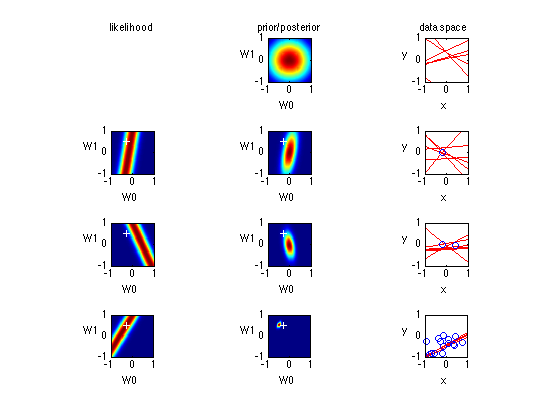

Bayesian infernece for simple linear regression with known noise variance
The goal is to reproduce fig 3.7 from Bishop's book We fit the linear model f(x,w) = w0 + w1 x and plot the posterior over w.
Contents
% This file is from pmtk3.googlecode.com function bayesLinRegDemo2d()
setSeed(1); % seed 0 reproduces Bishop's figure a0 = -0.3; %Parameters of the actual underlying model that we wish to recover a1 = 0.5; %We will estimate these values with w0 and w1 respectively. trainingPoints = 20; % Number of (x,y) training points noiseSD = 0.2; % Standard deviation of Gaussian noise, applied to actual underlying model. priorPrecision = 2.0; % Fix the prior precision, alpha. We will use a zero-mean isotropic Gaussian. likelihoodSD = noiseSD; % Assume the likelihood precision, beta, is known. likelihoodPrecision = 1/(likelihoodSD)^2;
Generate the training points
xtrain = -1 + 2*rand(trainingPoints,1); model = struct('mu', 0, 'Sigma', noiseSD); noise = gaussSample(model, trainingPoints); ytrain = a0 + a1*xtrain + noise;
Plot
Number of successive data points for which likelihood distributions will be graphed. The prior and the last data point are always plotted so 0 <= iter <= trainingPoints - 1.
iter = 2; % Plot the prior distribution over w0, w1 subplot2(iter+2,3,1,2); priorMean = [0;0]; priorSigma = eye(2)./priorPrecision; %Covariance Matrix priorPDF = @(W)gaussProb(W,priorMean',priorSigma); contourPlot(priorPDF,[]); % Plot sample lines whose parameters are drawn from the prior distribution. subplot2(iter+2,3,1,3); plotSampleLines(priorMean',priorSigma,6,[]) % For each iteration plot the likelihood of the ith data point, the % posterior over the first i data points and sample lines whose % parameters are drawn from the corresponding posterior. mu = priorMean; sigma = priorSigma; for i=1:iter subplot2(2+iter,3,i+1,1); likelihood = @(W) uniGaussPdf(xtrain(i),W*[1;xtrain(i)],likelihoodSD.^2); contourPlot(likelihood,[a0,a1]); subplot2(2+iter,3,i+1,2); [postW,mu,sigma] = update([1,xtrain(i)],ytrain(i),likelihoodPrecision,mu,sigma); contourPlot(postW,[a0,a1]); subplot2(2+iter,3,i+1,3); plotSampleLines(mu,sigma,6,[xtrain(1:i),ytrain(1:i)]); end % Plot likelihood for the last point alone last = trainingPoints; subplot2(2+iter,3,iter+2,1); likelyhoodLast = @(W) uniGaussPdf(xtrain(last),W*[1;xtrain(last)],likelihoodSD.^2); contourPlot(likelyhoodLast,[a0,a1]); % Plot the posterior over all of the training data. subplot2(2+iter,3,iter+2,2); [postW,mu,sigma] = update([ones(trainingPoints,1),xtrain],ytrain,likelihoodPrecision,priorMean,priorSigma); contourPlot(postW,[a0,a1]); % Plot sample lines whose parameters are drawn from the posterior. subplot2(2+iter,3,iter+2,3); plotSampleLines(mu',sigma,6,[xtrain,ytrain]); % Add titles subplot2(2+iter,3,1,1); title('likelihood'); axis off; subplot2(2+iter,3,1,2); title('prior/posterior'); subplot2(2+iter,3,1,3); title('data space'); printPmtkFigure bayesLinRegPlot2dB
end function plotSampleLines(mu, sigma, numberOfLines,dataPoints) % Plot the specified number of lines of the form y = w0 + w1*x in [-1,1]x[-1,1] by % drawing w0, w1 from a bivariate normal distribution with specified values % for mu = mean and sigma = covariance Matrix. Also plot the data points as % blue circles. for i = 1:numberOfLines model = struct('mu', mu, 'Sigma', sigma); w = gaussSample(model); func = @(x) w(1) + w(2)*x; fplot(func,[-1,1,-1,1],'r'); hold on; end axis square; set(gca,'XTick',[-1,0,1]); set(gca,'YTick',[-1,0,1]); xlabel(' x '); ylabel(' y ','Rotation',0); if(size(dataPoints,2) == 2) hold on; plot(dataPoints(:,1),dataPoints(:,2),'ob'); end %Generates a colour filled contour plot of the bivariate function, 'func' %over the domain [-1,1]x[-1,1], plotting it to the current figure. Also plots %the specified point as a white cross. end function contourPlot(func,trueValue) stepSize = 0.05; [x,y] = meshgrid(-1:stepSize:1,-1:stepSize:1); % Create grid. [r,c]=size(x); data = [x(:) y(:)]; p = func(data); p = reshape(p, r, c); contourf(x,y,p,256,'LineColor','none'); colormap(jet(256)); axis square; set(gca,'XTick',[-1,0,1]); set(gca,'YTick',[-1,0,1]); xlabel(' W0 '); ylabel(' W1 ','Rotation',0); if(length(trueValue) == 2) hold on; plot(trueValue(1),trueValue(2),'+w'); end end % % Given the mean = priorMu and covarianceMatrix = priorSigma of a prior % Gaussian distribution over regression parameters; observed data, xtrain % and ytrain; and the likelihood precision, generate the posterior % distribution, postW via Bayesian updating and return the updated values % for mu and sigma. xtrain is a design matrix whose first column is the all % ones vector. function [postW,postMu,postSigma] = update(xtrain,ytrain,likelihoodPrecision,priorMu,priorSigma) postSigma = inv(inv(priorSigma) + likelihoodPrecision*xtrain'*xtrain); postMu = postSigma*inv(priorSigma)*priorMu + likelihoodPrecision*postSigma*xtrain'*ytrain; postW = @(W)gaussProb(W,postMu',postSigma); end